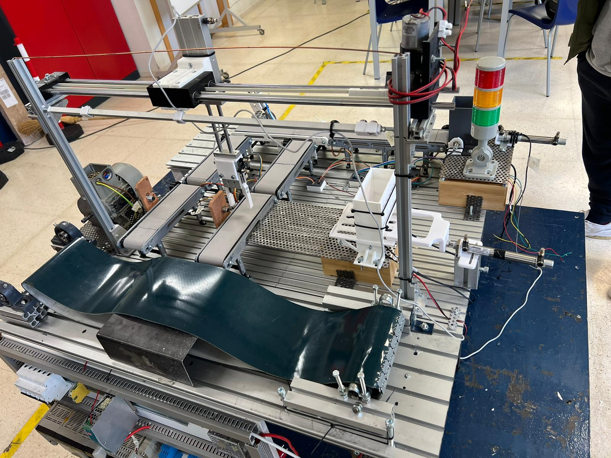

¡Bienvenidos a nuestro proyecto de robótica!
En este emocionante viaje hacia el futuro de la tecnología, estamos encantados de presentarles nuestro último proyecto de robótica. En un mundo cada vez más impulsado por la innovación y la automatización, nuestra pasión por la robótica nos ha llevado a explorar nuevas fronteras y desafiar los límites de lo posible. Nuestra página web es un escaparate de nuestro arduo trabajo, creatividad y dedicación en el campo de la robótica. Desde la concepción hasta la implementación, hemos invertido innumerables horas diseñando y construyendo esta maqueta que no solo es impresionante en términos de funcionalidad, sino que también está imbuida de un profundo sentido de propósito y visión para el futuro. Dentro de este sitio, encontrarás una amplia gama de información sobre nuestro proyecto. Desde detalles técnicos y especificaciones de nuestros robots hasta vídeos de demostración y documentación detallada sobre nuestro proceso de desarrollo, estamos comprometidos a compartir nuestro conocimiento y experiencia con la comunidad. Además, invitamos a todos los entusiastas de la robótica, estudiantes, profesionales y curiosos por igual, a unirse a nosotros en este apasionante viaje. Así que adelante, sumérgete en nuestro sitio, descubre nuestras creaciones y únete a nosotros en este apasionante viaje hacia el futuro de la robótica.
